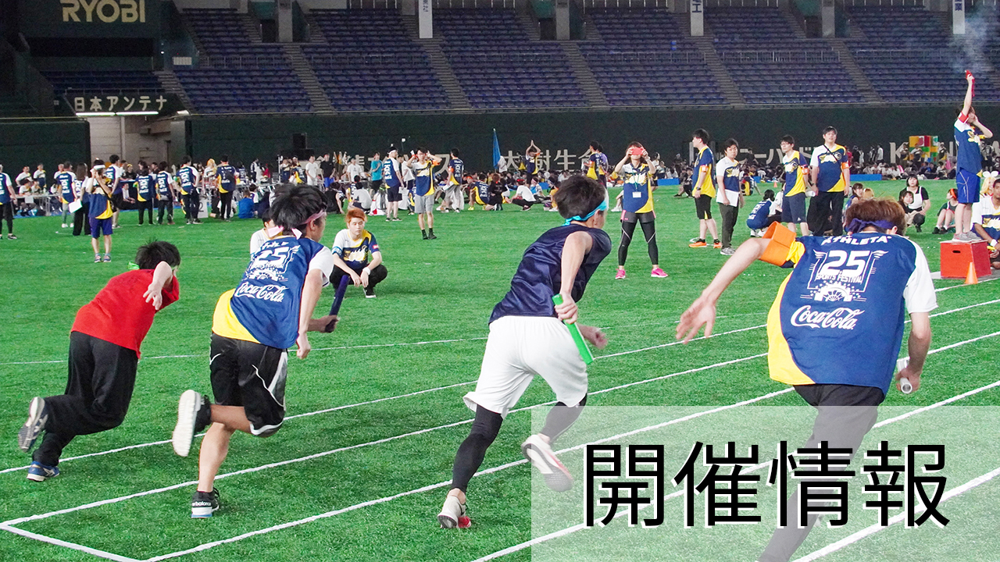

HOME
開催情報
競技情報
暑さ対策
コロナ対策
アクセス
注意事項

期日：2022年8月18日 (木)
集合場所(入場ゲート)：
「東京ドーム・２２番ゲート」
会場アクセス＞
スケジュール
09:00（14:00）
学生入場開始
10:00（15:00）
開会式（開会宣言・挨拶、諸注意）
10:10（15:10）
準備運動
10:40（15:40）
競技開始（大玉送り終了後 サイド種目、アトラクション種目スタート）
11:50（16:50）
競技終了閉会式 (閉会宣言・講評)
12:00（17:00）
退場
午前集合時間
09:00 青チーム
Webデザイン科
ケータイ・アプリケーション科
電子応用工学科
情報ビジネスライセンス科
電気工学科
高度電気工学科
09:10 白チーム
AIシステム科
情報システム開発科
09:20 赤チーム
情報処理科
09:30 橙チーム
ネットワークセキュリティ科
高度情報処理科
電気工事技術科
午後集合時間
13:30 青チーム
アニメーション科
アニメーション研究科
コンピュータグラフィックス研究科
ＣＧ映像制作科
13:40 白チーム
コンピュータグラフィックス科
グラフィックデザイン科
13:50 赤チーム
ゲーム制作科
14:00 橙チーム
ゲーム企画科
ゲーム制作研究科
注意事項＞